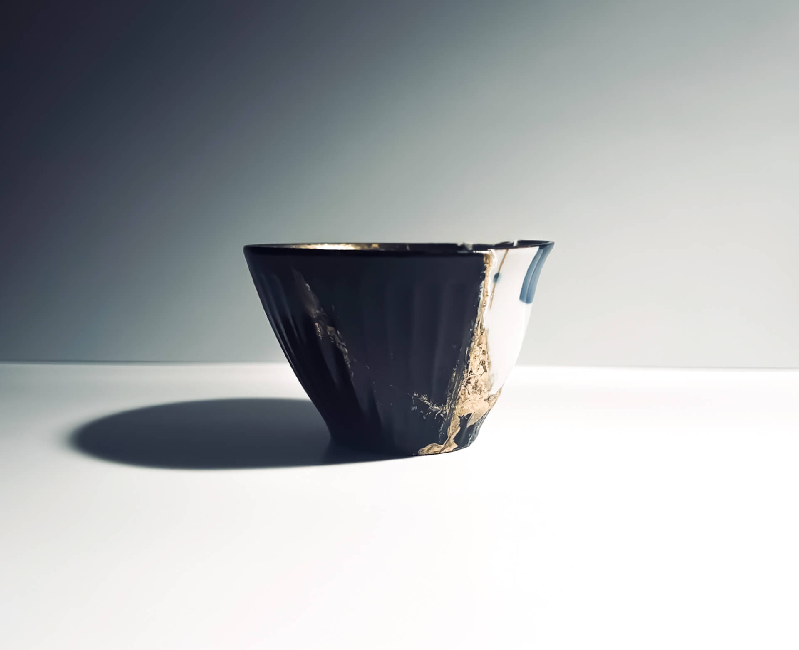
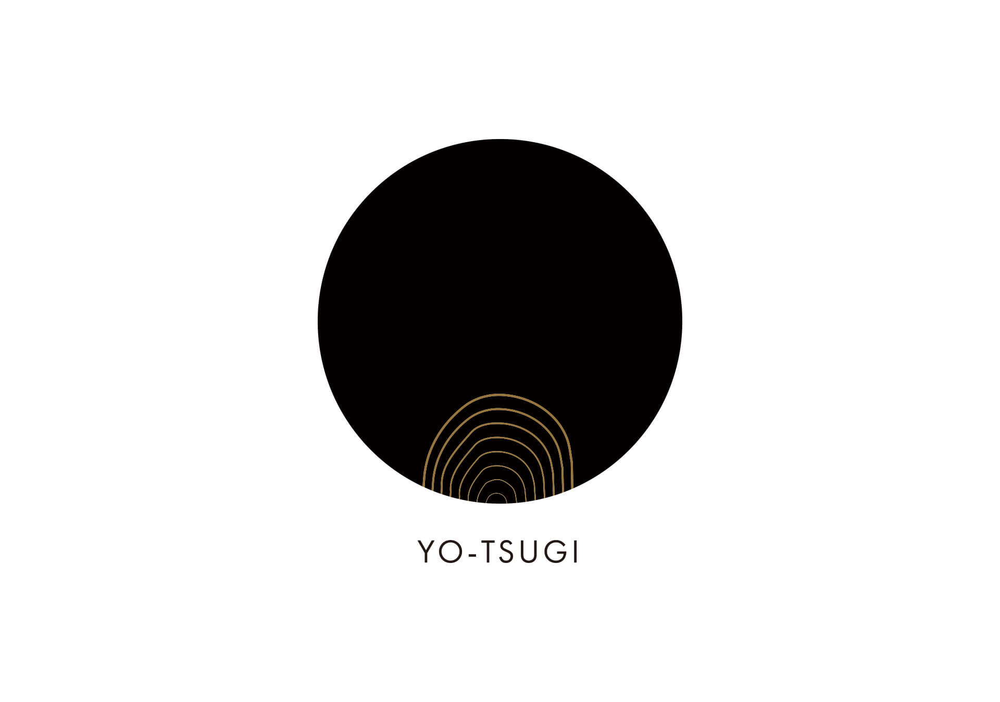
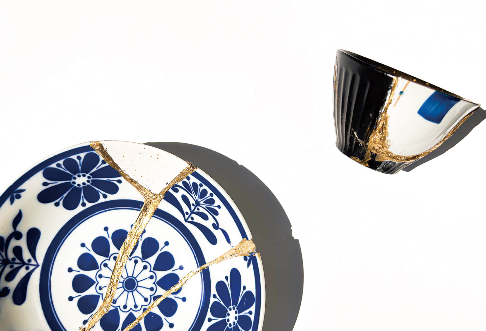
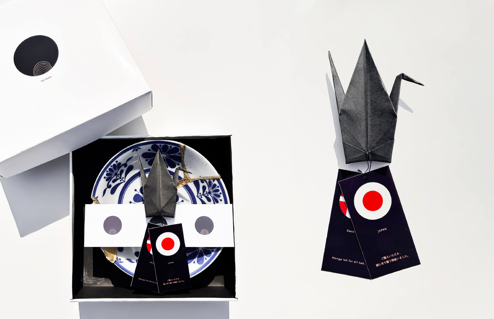
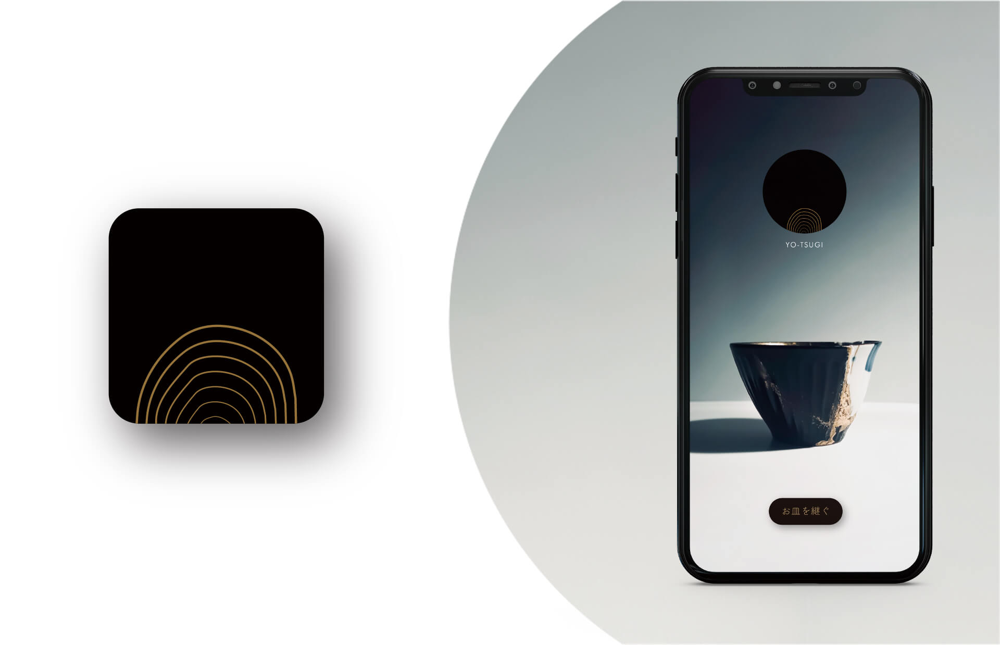

世界にはそれぞれの国の魅力や文化が詰まった器がある。握手をして仲直りしたり、交流を深めるように、異なった文化の器どうしを継ぎ合わせることにより、世界平和の実現を目指す金継ぎメーカー”YO-TSUGI（ヨツギ）”。世を継いでいくブランドを醸成し、パッケージデザイン、アプリケーションを制作した。


ロゴマーク
金継ぎの技術で世界を照らしていくという意思を表した金の波紋を、黒で表した地球の球体に広げたデザイン。

2~6種類の器を使用し制作可能。同じ国の器も継ぐことができる。国際交流のきっかけとして、他国に対する自身の価値観を形として表す名刺の役割も併せ持つ。

パッケージ
パッケージの中には帯で締めたお皿と、感謝状を同封している。平和を表す鶴の折り紙と、そのお皿を作成するのに使用したそれぞれの国の感謝状のタグを添えている。

アプリケーション
“YO-TSUGI Online”。自分だけの金継ぎをアプリで簡単に。YO-TSUGIは世界中の魅力的な器を取り揃えており、アプリで自分の好きな器をいつでもどこでも作成することができる。